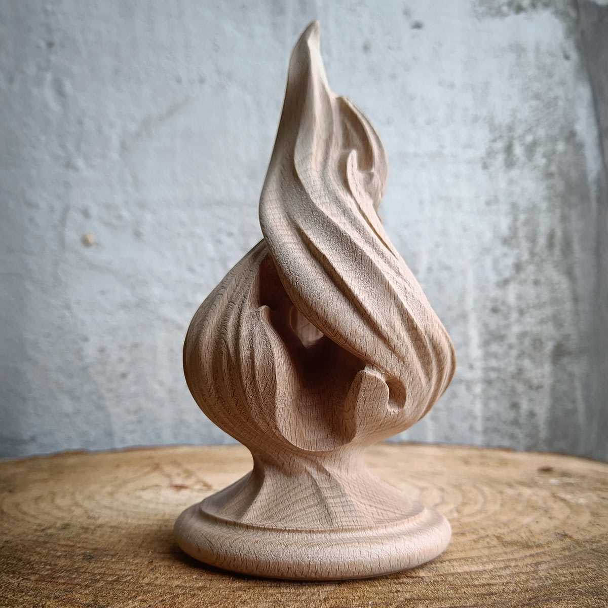
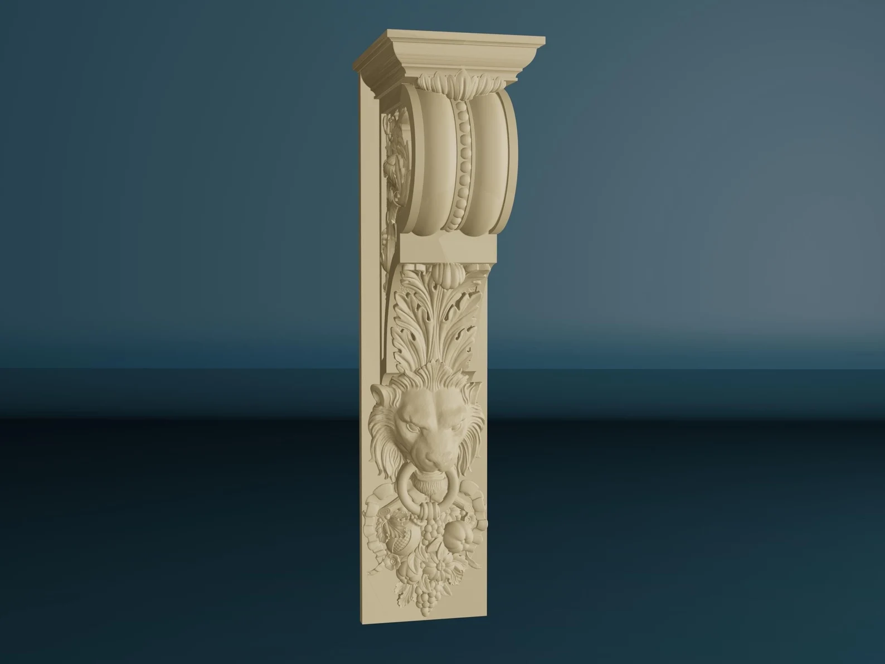
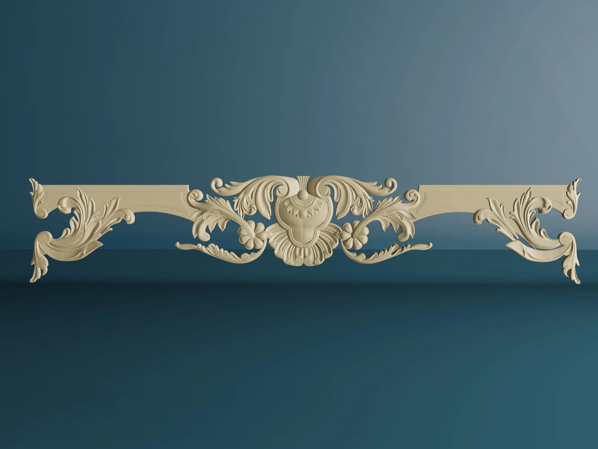
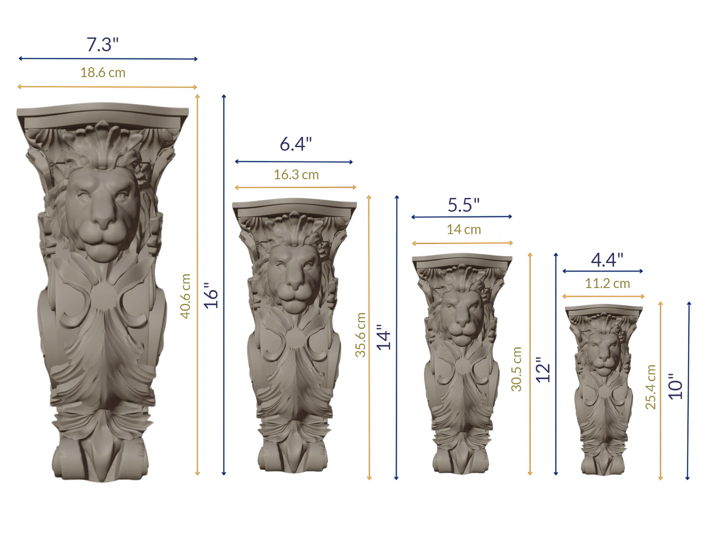

Carved Wood Finials
Add a distinctive finishing detail to stair posts, furniture, and architectural features.
Shop FinialsDecorative Wood Carvings & Architectural Ornaments
Find carved wood finials, corbels, capitals, appliqués, and decorative accents for furniture, cabinetry, staircases, and architectural features.
Shop the CollectionThe Collection
Explore decorative wood carvings in a variety of styles and sizes. From subtle embellishments to striking architectural accents, discover the pieces that make your project uniquely yours. What to check before ordering

Add a distinctive finishing detail to stair posts, furniture, and architectural features.
Shop Finials
Bring decorative dimension to shelving, cabinetry, mantels, and architectural millwork.
Shop Corbels
Introduce classical character and ornamental detail to columns, pilasters, and interior features.
Shop Capitals
Embellish cabinetry, furniture, doors, and panels with intricately carved decorative designs.
Shop Appliqués
Explore decorative wood accents that bring warmth, personality, and handcrafted character to interiors.
Shop Decor
The right decorative detail can transform the look and feel of a room. A carved corbel adds character to a kitchen island. An ornamental appliqué brings new life to cabinetry. A distinctive finial completes a staircase.
Whether you're creating something new or enhancing an existing design, carved wood details make the difference between ordinary and memorable.
Shop the CollectionHome Interior Wood Carvings
From traditional ornamentation to distinctive architectural accents, our collection gives you the flexibility to bring your ideas to life.
Explore decorative styles that complement traditional, transitional, and custom interiors.
Choose from a variety of dimensions to suit furniture, cabinetry, and architectural applications.
Choose unfinished wood carvings ready to stain or paint to complement your project.
Add decorative details to new construction, renovations, furniture, and custom woodworking.
Whether you're a homeowner adding a personal touch, a designer refining a vision, or a contractor completing a project, the right detail is within reach.
Shop the CollectionFind the Right Piece and Size
Choosing decorative wood carvings means finding a style you love in the right size and proportion. Use our Proportion Finder to visualize how different sizes could work in your project.
See how different sizes of corbels, capitals, and appliqués look in architectural settings.
Lion corbel size reference
Choose a height to compare two matching lion corbels beneath the mantel in the same room setting.
Showing two 14-inch lion corbels

Always confirm actual product dimensions and installation requirements before ordering.

Select the piece (or pieces) for your space.
Note the available width, height, and clearance in your space. Compare those measurements with the selected piece to confirm your desired proportion.
Before ordering, check the material, finish, installation requirements, price, and delivery options for your chosen pieces.
Helpful Details
A few helpful details before you order. From sizing and materials to finishing and installation, here's what to know before choosing your wood carvings.
Yes. These items are considered special orders and take longer to deliver. Contact us at (800) 555-3694 with your preferred dimensions, and we'll let you know if we can accommodate your request.
Most pieces are in stock and ready to ship. Stocked items generally ship the same day when ordered by 1 PM Central Time. Select your delivery preference during checkout. Special orders and out-of-stock items typically arrive in 6–8 weeks.
All pieces are made from real wood, typically ash or oak.
Yes. All pieces come sanded and ready for staining, sealing, or painting.
Installation depends on the type and size of the carving. Appliqués are typically attached with wood glue and sometimes finishing nails. Corbels and capitals may require screws or other mounting hardware, while finials are often secured with dowels or threaded fasteners. Always confirm the appropriate mounting method for your specific piece. Decorative corbels should not be assumed to provide structural support.
Find your project’s focal point
From a single decorative accent to an entire interior project, discover carved wood details that bring your ideas together.
Explore the collection and choose the pieces that make your design distinctive.
Shop the Collection